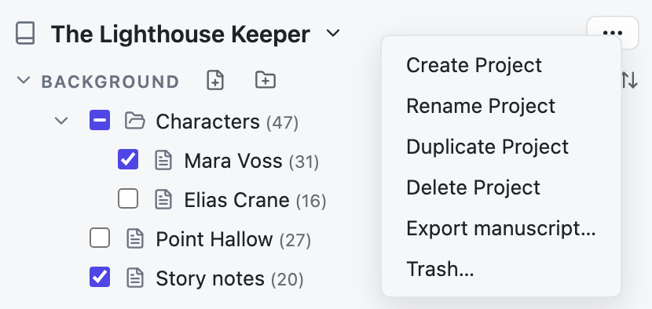
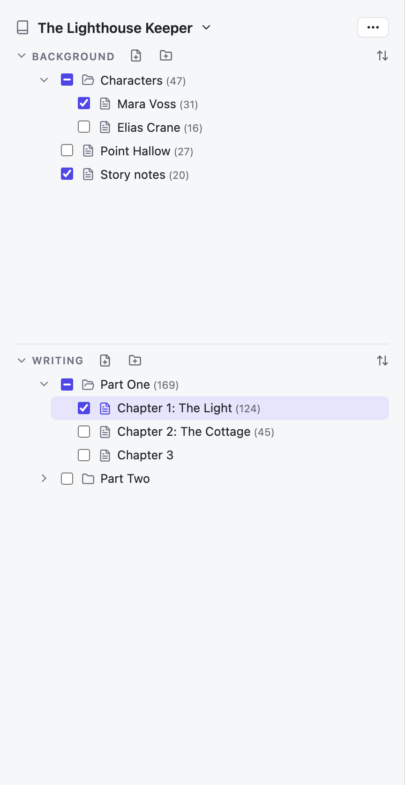
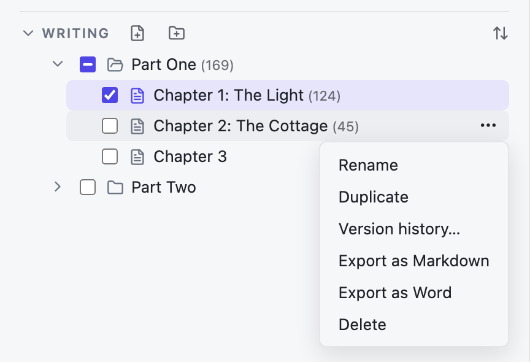
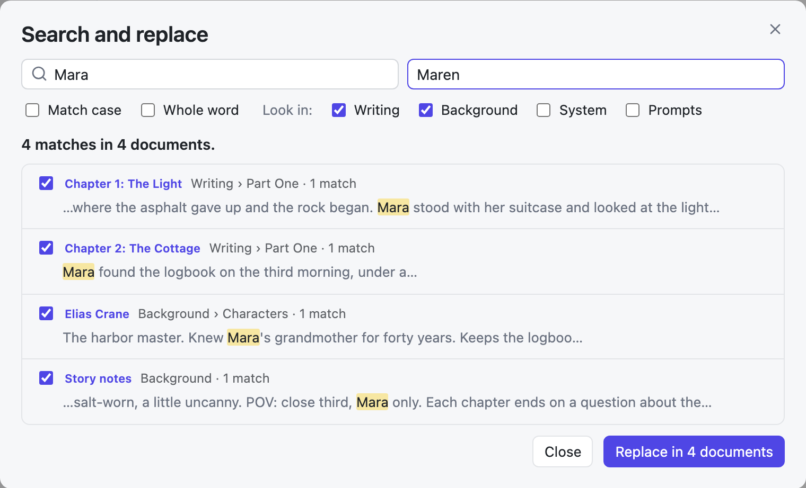
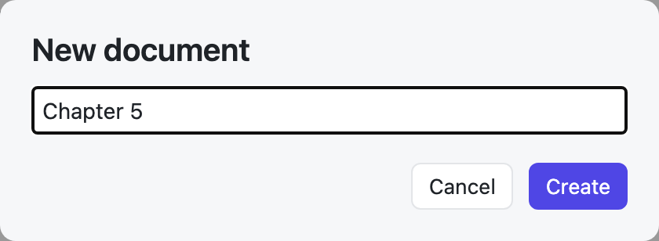

Projects and the sidebar
Keep each book in its own project, and its notes and chapters in order.
Projects
A project is one book: its notes and its chapters. Click the project name at the top of the sidebar to switch to another project.

- Create, Rename, Duplicate Project. Duplicate copies the whole project, without its history and trash.
- Delete Project. The project moves to the Trash. You can restore it.
- Search and replace… searches every document at once. See Search the whole project.
- Import… brings in Markdown, text, and Word files, or a whole folder. See Import.
- Export manuscript… turns the Writing section into one Word or Markdown file. See Export.
- Trash… shows deleted documents and projects.
Background and Writing

- Background holds your notes: characters, setting, research, outlines.
- Writing holds the book itself: chapters and scenes.
Next to each section label:
- the page with a plus makes a new document,
- the folder with a plus makes a new folder,
- the arrows on the right change the order: your own order, A–Z, or Z–A.
Click a section label to fold it away. The numbers in brackets are word counts; a folder shows the total of what it holds.
Your rules and saved instructions (System and Prompts) are not in the sidebar. They are in the AI setup panel, and they are shared by all projects.
Tick boxes
A tick next to a document means: send this to the AI as background. Tick a folder to tick everything inside it. Ticks do nothing else, so you can leave them on while you write. See What the AI sees.
Moving and ordering
- Drag a document up or down to change its place.
- Drag it onto a folder to put it inside.
- Drag it into the other section to move it between Background and Writing.
Drag the sidebar's edge to make it wider or narrower; double-click the edge to reset it. Hide the sidebar with the sidebar button or ⌘\.
Document and folder menus
Hover over a document and click ⋯:

- Rename changes the title and the file name.
- Duplicate makes a copy next to it.
- Version history… shows earlier versions. See Version history.
- Export as Markdown / Export as Word saves this one document as a file.
- Delete moves it to the Trash.
A folder's ⋯ menu has Add File, Rename Folder, Duplicate Folder, and Delete Folder. A folder can only be deleted when it is empty.
Search the whole project
Open the project ⋯ menu → Search and replace…, or click Search all documents… in the find bar.

- Type what to find. The list shows every document with a match, where it sits, how many matches it has, and each match in its sentence.
- Match case and Whole word work as in the find bar. Look in chooses the sections: Writing and Background, and if you like the AI setup's System and Prompts.
- Click a document's title to open it, with the find bar showing the same search.
- To replace, type the new text, untick any document to leave out, and click Replace in … documents. The app asks first, and keeps each document's current text in Version history before it changes anything.
Search looks in the text of your documents, not in their titles.
Names and questions

When the app needs a name, or asks before deleting, a small window opens. Press ↵ to confirm or Esc to cancel. A delete question has a red button and starts on Cancel, so ↵ alone never deletes anything.